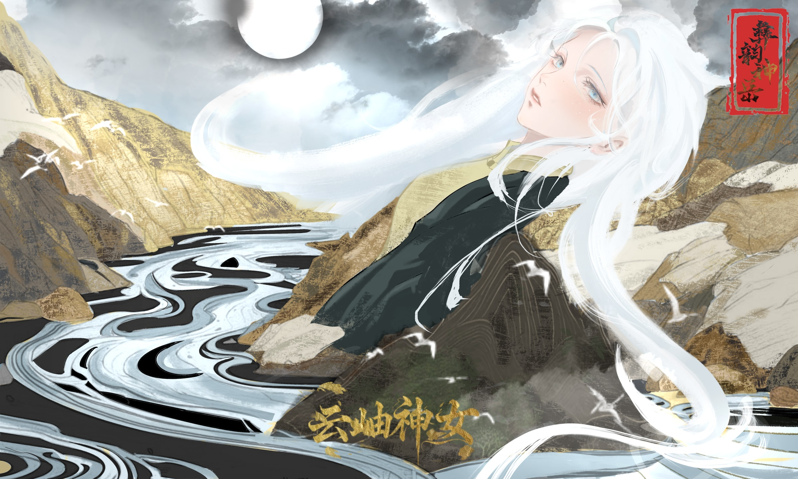
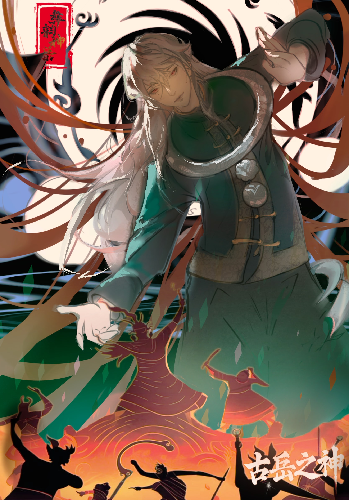
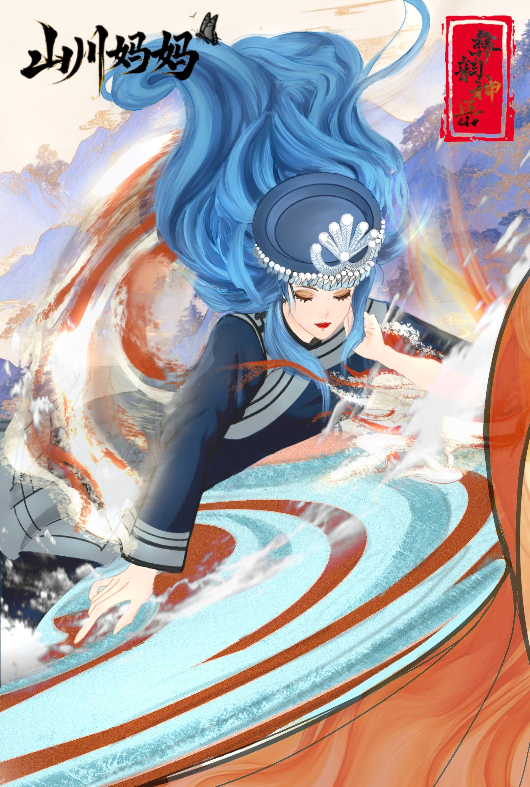
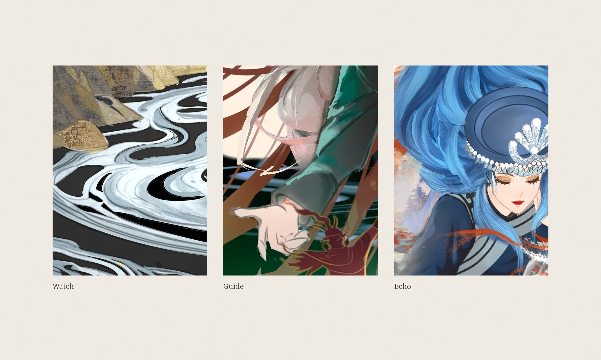
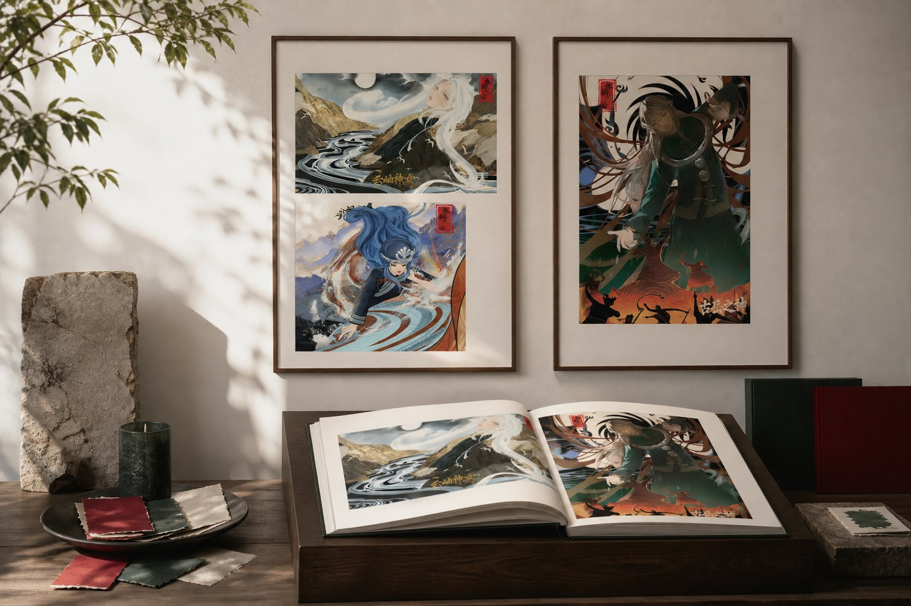
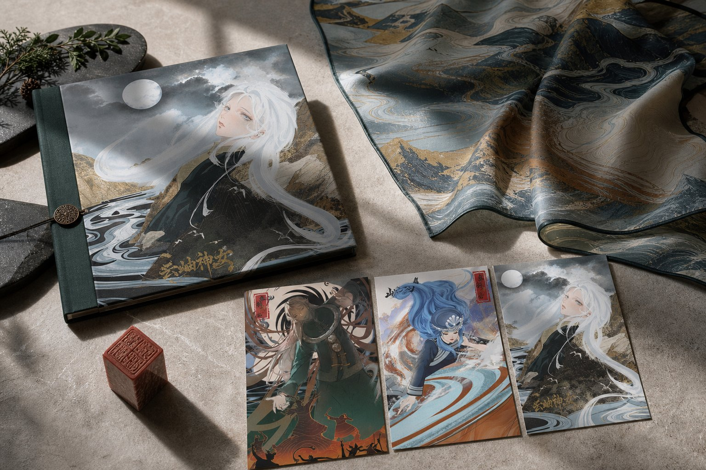

叙事插画 · 自主项目
神岳
山、风与水，塑造出三位山灵。
取材于山神传说的角色设计和系列插画。
三位山灵共用纹样、色彩和一条流动的路径，并延伸到出版和收藏品。

起点
从传说里，
找出能继续生长的规则。
我们从山神故事里收集线索：山形、水系和仪式的节奏。目标不是画三张单独的肖像，而是一套能不断长出角色和场景的规则。
思路
山、水、风、印
山撑起结构，水形成路径，风把人物和场景连在一起。岩灰、苔绿和冷水蓝是主色，朱砂红只留给印章和仪式的节点。
山
承载与守望
水
迁徙与记忆
⌁风
呼吸与回响
山印
仪式与落款
方法
- 收集意象
山神、山形、水系、仪式节奏
- 提炼规则
山、水、风、印成为可复用的视觉语法
- 角色叙事
守望、引路、回响三种视角
- 尺度测试
在出版与收藏场景中检验系列



三位山灵，
三种看待山水的方式。
「守望」由山峰和月光构成；「引路」融合了火、藤蔓与人形；「回响」以水和长发打开空间。
三位角色可以同时出现，也可以单独展示。


从一张画，到可以翻阅的世界
三幅原画按远景、人物和细部来编排。
从画中提取的印章、山形和水线，延伸到画册、收藏卡、丝巾和纸品。应用图用于测试尺度，并非实景拍摄。

成果